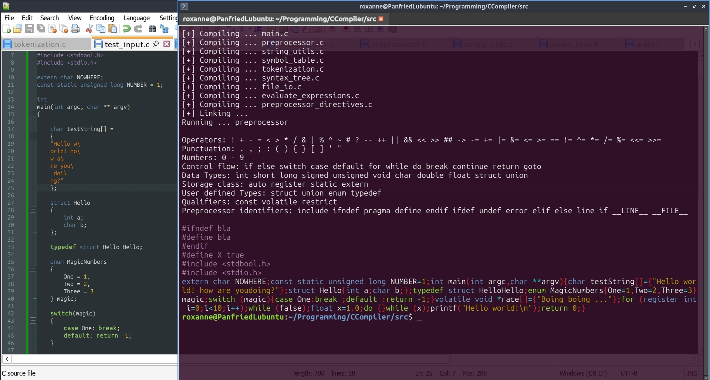

Little project to take a closer look at the inner machinations of the C programming language, written in C!
Currently working on the preprocessor. Implementing that first before moving on to the actual compiling part of the compiler. The preprocessor's job is to prep and parse the C code so the compiler can consume it and compile it into x86 assembly code. Before making the assembler myself I will feed the output into an existing assembler like GNU assembler.
